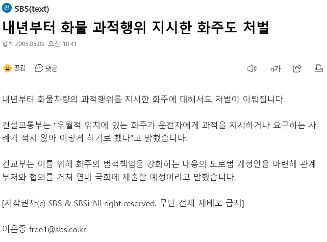

20년 전에서 왔습니다. 미래에는 과적 없어졌겠죠?

20년 전에서 왔습니다. 미래에는 과적 없어졌겠죠?
https://www.dogdrip.net/pic/733249820
30년전 버전도 준비함
ㅋㅋㅋㅋㅋㅋㅋㅋㅋㅋㅋㅋㅋㅋㅋㅋㅋㅋㅋㅋㅋㅋㅋㅋㅋㅋㅋㅋㅋㅋㅋㅋㅋㅋㅋㅋㅋㅋㅋㅋㅋㅋㅋㅋ
통녹업+3
지시 안했어도 처벌해야지 저러면 지시 안받았다고 할거아냐
간단함. 화물차 운전자가 화주를 과적시켰다고 신고하고, 화주가 과적을 강요했다는 것을 입증하면 운전자는 면책되고 화주가 처벌받음 ㅋㅋㅋㅋ
https://n.news.naver.com/mnews/article/001/0012199394?sid=100
그랬더니 0.2%나 되는 화주가 처벌받음!
ㅅㅂ 반대여야하는거 아니여?
주장하는 사람이 입증해야하는게 맞긴 하지 성범죄처럼
성무고는 그게 잘 안지켜져서 문제니까...
백종원 귤 함유량 급
고양이목에 방울달면 처벌!
캬~~ 이제 과적같은건 꿈도못꾸겠구만~~
과태료로 낮췄을때부터... 과태료 안내고 버티거나 5회이상 걸리면 무조건 고발하는걸로 다시바꿔야됨
존나 의미없는 탁상공론은 시벌
운전자가 화주를 고발 해야지 화주가 처벌 받음 ㅋㅋㅋㅋㅋ 말같지도 않은 조항임 화주 고발 했다가는 일자리 없어지는데 누가하냐고 강제조항으로 넣어야지

간단함. 과적해버리면 출발지 사업장이 그냥 죽어버리면됨.
그럼 과적하려는거 멈춰세우겠지. 한국은 기업하기 너무 편한나라야. 기업이 불법 저질러도 까잇거 벌금내지뭐 가 되니까.
벌금이 문제가 아니라 회사 존폐가 좌우되게 벌금물려야함.
그럼 회사 망하게 하려면 몰래 과적해버리면 되겟땨☆
회사도 그거 안당할라면 당연히 회사 밖으로 나갈때 CCTV 찍어놔서 증거 남기겠지.
실제로 일본회사들은 과적문제로 외부 출입 트럭 무게 측정용 저울 만들어놓은곳 있더라.
단순히 과적만 그런게 아니라 폐품 수거하는 업체들이 사기치지않게하려고
그럼 회사 밖에서 몰래 과적하라고 시키면 되겠다☆ 개꿀야르~
그래서 전 국토 구석구석 CCTV가 더 많이 설치되어야 하고, 안면인식이나 사물 인식이
비교할 수 없이 정교해지고 AI 발달로
국가가 전 국토를 들여다 볼 수 있는 세상이 왔으면 좋겠다
무단횡단, 금연구역 흡연, 쓰레기 투기 벌금 5억씩물려야하는데 그치?
너 천재냐? 국회의원 출마해라
ㅋㅋㅋㅋ 과적 잡긴함?
걍 서로 죽여라 하면 안되나?
화주가 시키든 기사가 돈 더 벌려고 과적을 하든
신고로 걸리면 벌금내고
신고한놈은 벌금 걷어다가 신고 포상금주고 하면 안되나?
서로 저새끼가 과적시키면 신고해야지
저새끼가 욕심부리면 신고해야지 눈에 불켜고 신고할거아님?
벌금 한 50만원하고 포상금 40만원 가자
https://n.news.naver.com/mnews/article/011/0000209701?sid=102
관료들도 문제 있는거 20년쯤 전부터 알고 있었음. ㅋ...
20년전ㅋㅋㅋㅋㅋ